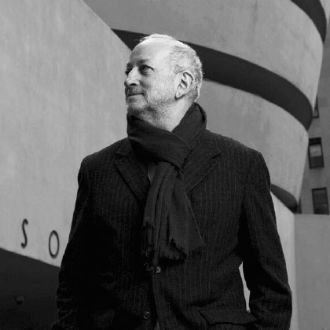

-
POPOCATÉPETL 526
Se desplanta sobre un terrero de 4,000m2, que permitirá el desarrollo mixto compuesto de un edificio corporativo, vivienda y comercio con un total de aproximadamente 41,000m2 construidos.
Distribuidos en diecinueve niveles de oficinas corporativas, planta baja, dos niveles para comercio o servicios, una gran plaza central y más 9 sótanos de estacionamiento que cubrirán la demanda del mismo.
-
POPOCATÉPETL 526
Se localiza en uno de los corredores con mayor conectividad movimiento financiero en la Ciudad de México, el corredor Insurgentes.
Proyecto mixto del reconocido Arquitecto Enrique Norten, se desarrolla sobre un desplante de 4,000m2. El corporativo se compone con un total de 14,000m2 rentables de oficinas, una plaza comercial de 1,000m2 y vivienda de 26,000m2 formando un total de casi 41,000m2 construídos del complejo total.
La entrega de los espacios de oficina de Popocatépetl 526 para su acondicionamiento se tiene contemplada para el primer cuatrimestre del 2021 y la operación del edificio será en el segundo cuatrimestre del 2021.
Popocatépetl 526, cuenta con una ubicación privilegiada, se localiza entre Av. Popocatépetl y Mayorazgo de Solis, a unos pasos de Av. Universidad, Av. Coyoacán y Av. Cuauhtémoc, algunas de las avenidas de mayor afluencia en la zona Sur de la Ciudad de México. Su ubicación estratégica permitirá a los usuarios y visitantes del corporativo un fácil acceso vehicular así mismo una gran movilidad con la variedad de transporte público de la zona en ambos sentidos.
Conoce más del proyecto dando click en www.agatha.com.mx
-
ENRIQUE NORTEN
Reconocido arquitecto mexicano, titular de la Cátedra Miller en la Universidad de Pennsylvania y ha sido profesor en las universidades de Yale, UCLA, Cornell, Parsons, Pratt Institute y Harvard. Ha recibido múltiples reconocimientos y galardones: en 1998 recibió el Premio Pabellón Mies Van Der Rohe de Arquitectura Latinoamericana y desde 1999 es Miembro honorario del American Institute of Architects. En 2013, fue reconocido con el Project Merit Award de la AIA NY Design por el proyecto del New York Public Library; obtuvo el “International Award” por la Sociedad Americana de Arquitectos Registrados [SARA]. Recibió el Premio “Trayectorias 2014” por el Colegio de Arquitectos de la Ciudad de México, así como el Premio a la Expresión Artística de la Fundación José Limón en Nueva York. Recibe también la Richard J. Neutra Medal for Professional Excellence 2015.

-
Características
Fachada
Las fachadas del edificio son de muro cortina con el sistema "Duo Vent" (doble vidrio) de alta eficiencia, que genera ahorros en energía eléctrica, iluminación y aires acondicionados prefabricados verticales para dar mayor sombra en el interior de los espacios.
Núcleos de Servicio
Cada nivel de oficinas tiene el núcleo de servicios que se entrega totalmente terminado e instalaciones funcionando:
- Vestíbulo de elevadores.
- Sanitarios para mujeres y hombres con un ducto vertical para instalaciones hidráulicas y sanitarias, así como extracción mecánica de aire.
- Vestíbulo para elevador de servicio (montacargas).
- Cuarto de aseo.
- Ducto vertical para el sistema de protección contra incendio.
- Cuarto técnico para la Unidad Manejadora de Aire UMA´s por cada nivel.
- Cuarto eléctrico, ductos de control y comunicaciones.
- Dos escaleras de emergencia presurizadas.
Sistema contra Incendios
El edificio cuenta con la infraestructura para el sistema central de rociadores, detectores de humo, alarmas, además de salidas de emergencia, escaleras de emergencia e hidrantes por piso; además de tomas siamesas en el exterior del edificio. Los pisos de oficina se entregan con la conexión a punta para que cada inquilino haga su distribución interna.
Andén de Servicio
Ubicado en el sótano 1 de estacionamiento con conexión directa al elevador de servicio, el edificio cuenta con un área para carga y descarga independiente a la circulación y estacionamiento del corporativo.
Extracción de Sótanos
Todos los niveles de estacionamiento al encontrarse bajo el nivel de banqueta cuentan con el sistema de extracción de gases a base de detectores y sensores de bióxido de carbono, conectados al sistema inteligente y al sistema de emergencia del edificio.
-
Sustentabilidad
Popocatépetl 526 contempla las más inovadoras tendencias internacionales de los edificios sustentables. El edificio genera las siguientes ventajas:
- Ahorro y eficiencia en consumo de energéticos.
- Ahorro y eficiencia en el acondicionamiento de interiores.
- Eficiencia en el uso y consumo de agua.
- Reducción de emociones CO2.
- Calidad medio-ambiental.
- Administración de recursos naturales.